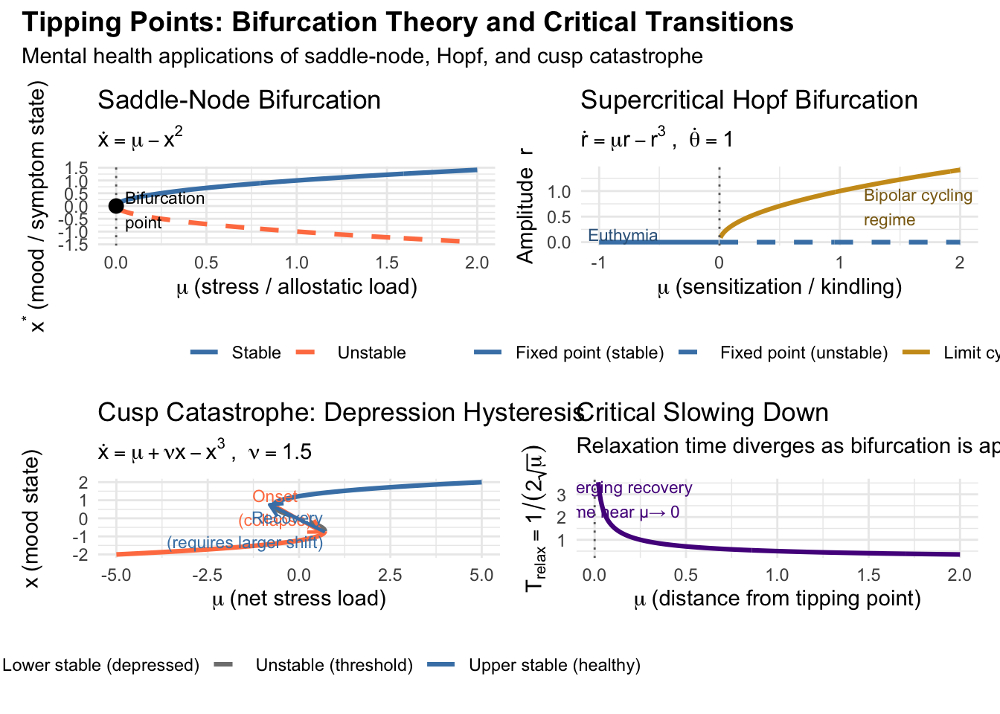

Chapter 13 Tipping Points: Bifurcation Theory and Critical Transitions
The previous post showed how delay converts a stable equilibrium into sustained oscillation — a continuous, gradual erosion of stability as the bifurcation parameter \(\tau\) crosses a threshold. This post addresses a different and in some ways more alarming class of transitions: those that are abrupt, asymmetric, and difficult to reverse. These are the hallmarks of bifurcations in non-delayed systems where the architecture of the phase plane itself changes as a parameter moves. The central objects are the saddle-node bifurcation, which governs the sudden appearance and disappearance of equilibria, and the Hopf bifurcation, which governs the birth of oscillation. Together, they provide the mathematical skeleton of what the complexity sciences call tipping points — and what clinicians observe as the onset of, or recovery from, psychiatric disorders.
13.1 What a Bifurcation Is
A bifurcation is a qualitative change in the long-run behavior of a dynamical system as a parameter passes through a critical value. Below the threshold, the system may have one attractor; above it, it may have two, or none, or a cycle. The parameter itself — call it \(\mu\) — does not need to change dramatically. A small, continuous shift can cross the system into a regime with structurally different dynamics. This is what distinguishes a bifurcation from an ordinary smooth deformation: the change in geometry is discontinuous even when the change in parameter is not.
Parameter space is the set of all possible values of \(\mu\) (or, in multi-parameter systems, the \((\mu_1, \mu_2, \ldots)\) plane). The bifurcation diagram plots the system’s equilibria and their stability as a function of \(\mu\). Solid branches denote stable fixed points; dashed branches denote unstable ones. Reading a bifurcation diagram is the fastest way to understand what a model predicts about transitions, multistability, and irreversibility.
13.2 The Saddle-Node Bifurcation
The canonical form is
\[ \dot{x} = \mu - x^2 \]
For \(\mu < 0\), there are no real fixed points — the right-hand side is always negative and the system drifts without rest. At \(\mu = 0\), a single fixed point appears at \(x^* = 0\), but it is non-hyperbolic: the linearization has a zero eigenvalue. For \(\mu > 0\), two fixed points emerge at \(x^* = \pm\sqrt{\mu}\). The upper branch \(x^* = +\sqrt{\mu}\) has linearized eigenvalue \(-2\sqrt{\mu} < 0\) and is stable; the lower branch \(x^* = -\sqrt{\mu}\) has eigenvalue \(+2\sqrt{\mu} > 0\) and is unstable. The two branches collide and annihilate each other as \(\mu\) decreases back through zero — this collision is what gives the bifurcation its name (a saddle and a node merging).
The key behavioral signature is irreversibility under hysteresis. Suppose \(\mu\) decreases slowly from a positive value. The system tracks the stable upper branch until \(\mu = 0\), at which point the attractor vanishes and the state falls abruptly. To recover the upper branch, \(\mu\) must be increased back past \(\mu = 0\) — but depending on the full system, the state may not simply climb back; it may require a much larger forcing to re-enter the basin of attraction of the recovered equilibrium. This is hysteresis: the system’s state depends not just on the current parameter value but on the history of how it arrived there.
13.3 The Hopf Bifurcation (Normal Form)
While the saddle-node involves equilibria appearing and vanishing, the Hopf bifurcation involves an equilibrium losing stability to a limit cycle. The normal form in polar coordinates is
\[ \dot{r} = \mu r - r^3, \qquad \dot{\theta} = 1 \]
The fixed point at the origin (\(r = 0\)) exists for all \(\mu\). Its stability is governed by the radial equation: linearizing around \(r = 0\) gives eigenvalue \(\mu\), so the origin is stable for \(\mu < 0\) and unstable for \(\mu > 0\). At \(\mu = 0\) the stability switches — and for \(\mu > 0\), a stable limit cycle appears at radius \(r^* = \sqrt{\mu}\), oscillating with angular frequency \(\dot{\theta} = 1\).
This is the supercritical case: the limit cycle is born at zero amplitude and grows continuously as \(\mu\) increases, so the transition to oscillation is gradual and the new attractor is always stable. In the subcritical Hopf, the limit cycle appears with finite amplitude and is initially unstable; the system can jump abruptly to a large-amplitude oscillation with no gradual warning. The distinction between super- and subcritical is clinically consequential, as we will see.
13.4 Critical Slowing Down
Near any bifurcation, the dominant eigenvalue of the linearized system approaches zero — the system loses its ability to recover from small perturbations. This phenomenon, known as critical slowing down, has a precise statistical signature: the autocorrelation of the state variable at lag-1 increases toward 1, and the variance of fluctuations grows, as the parameter approaches the critical value. Both indicators reflect the same underlying geometry: the restoring force in the potential well is flattening, so random perturbations persist longer before being damped. pnas
For the saddle-node normal form \(\dot{x} = \mu - x^2\), the equilibrium is \(x^* = \sqrt{\mu}\) with linearized eigenvalue \(\lambda = -2\sqrt{\mu}\). As \(\mu \to 0^+\), \(\lambda \to 0\), and the relaxation time \(T_{\text{relax}} = 1/|\lambda| = 1/(2\sqrt{\mu})\) diverges. In an empirical time series, this manifests as the system appearing “sluggish” — mood scores, symptom counts, or physiological markers fluctuate more slowly and become more self-correlated before a transition pmc.ncbi.nlm.nih. This is the theoretical basis for early warning systems in psychiatry.
13.5 Hysteresis and the Difficulty of Recovery
Hysteresis — the property that the path into a state and the path out of it are different — is one of the most clinically important predictions of saddle-node bifurcation theory. In a bistable system (two co-existing stable equilibria), the state can be driven into the lower well by a parameter shift, but returning to the upper well requires crossing a potential barrier that may demand a much larger intervention in the opposite direction than the one that caused the fall. This is not a failure of willpower or treatment resistance in some mysterious sense; it is the geometry of the landscape. pmc.ncbi.nlm.nih
A standard way to visualize this is the cusp catastrophe surface in \((x, \mu_1, \mu_2)\) space, where \(\mu_1\) is a “normal factor” (overall stress level) and \(\mu_2\) is a “splitting factor” (vulnerability or sensitization). For low \(\mu_2\), the system transitions smoothly between states as \(\mu_1\) varies. For high \(\mu_2\), the surface folds — creating a region of bistability with a lower and upper sheet connected by an unstable middle branch. Moving across this fold produces the sudden onset and difficult reversal that characterizes many psychiatric episodes. pmc.ncbi.nlm.nih
13.6 Applications to Mental Health
13.6.1 Depression as a Tipping Point
The most empirically developed application is major depression. The network theory of psychopathology frames depression not as a latent disease entity but as a self-sustaining attractor: a dense web of mutually reinforcing symptoms (low energy → reduced activity → reduced reward → lower mood → less motivation → lower energy) that, once activated, maintains itself against interventions that would be sufficient to prevent onset. The saddle-node bifurcation provides the mathematical form: the healthy state and the depressed state co-exist as two stable attracta across a range of stress parameter values, separated by an unstable equilibrium that acts as a threshold. orygen.org
A landmark study in PNAS by Wichers and colleagues confirmed that critical slowing down — measured as rising autocorrelation and variance in daily mood time series — preceded the onset of a depressive episode in an intensively monitored individual. The signal appeared weeks before the clinical transition, suggesting that smartphones recording ecological momentary assessment data could function as real-time bifurcation detectors. Subsequent work showed that the same indicators anticipated not just onset but the direction of the transition — whether symptoms would increase or decrease — with the sign of the leading eigenvalue encoding this directional information. pmc.ncbi.nlm.nih
Hysteresis explains a well-documented clinical asymmetry: antidepressant doses sufficient to prevent the onset of a first episode often fail to achieve remission once the patient has crossed into the depressed attractor. The parameter must be driven to a value significantly more favorable than the original tipping point to push the system back across the fold. This is not a paradox — it is precisely what the cusp catastrophe model predicts. pmc.ncbi.nlm.nih
13.6.2 Bipolar Disorder as a Hopf-Type Cycle
Where depression maps naturally to saddle-node dynamics (two equilibria, abrupt transitions, hysteresis), bipolar disorder maps more naturally to Hopf-type dynamics: a stable equilibrium loses stability and a limit cycle emerges, alternating between depressive and manic phases. The normal form \(\dot{r} = \mu r - r^3\) is instructive here — when \(\mu\) (interpreted as a stress/sensitization parameter) crosses zero, the resting mood state becomes unstable and the system is captured by a cycle. Whether the Hopf is super- or subcritical determines whether the oscillation onset is gradual (supercritical) or whether the person abruptly enters a full manic or depressive episode with no intermediate amplitude (subcritical). pmc.ncbi.nlm.nih
Research by Goldbeter (2011) used a two-variable model of mood dynamics governed by inhibitory and excitatory interactions, showing that the transition between euthymia and cycling is indeed governed by Hopf-like bifurcations, and that the period of the resulting limit cycle — days to weeks — is consistent with observed bipolar cycling frequencies. Critical slowing down has been detected preceding transitions between depressed and manic episodes in bipolar time series, consistent with the theoretical prediction that the dominant Floquet multiplier of the limit cycle approaches 1 near the bifurcation boundary. pmc.ncbi.nlm.nih
13.6.3 Obsessive-Compulsive Disorder and Thresholds
OCD and related compulsive disorders exhibit a different bifurcation structure: rather than two mood states, there is a transition between a low-frequency compulsive behavior regime and a high-frequency one as stress or intrusive thought intensity crosses a threshold. This maps to a subcritical Hopf or, in simpler models, to a saddle-node on an invariant circle (SNIC) bifurcation, where a fixed point and a limit cycle collide. The clinical implication is that once compulsive cycles are established, reducing trigger intensity below the original onset threshold is insufficient for extinction — the system is trapped in the oscillatory attractor. Exposure and response prevention works, in part, by actively suppressing the cycle at above-threshold intensity, forcing the system off the limit cycle rather than waiting for the parameter to recede below the saddle. sprott.physics.wisc
13.7 Bifurcation Diagrams for Mental Health
The following R code constructs three bifurcation diagrams:
- Saddle-node: equilibria of \(\dot{x} = \mu - x^2\) as a function of \(\mu\), with the stable/unstable branches, annotated with the hysteresis loop for a full system with a fold.
- Hopf normal form: equilibrium amplitude and limit cycle amplitude as a function of \(\mu\) for \(\dot{r} = \mu r - r^3\).
- Mood bifurcation surface: a schematic cusp catastrophe projection in \((\text{stress}, x)\) space, showing the bistable region with the unstable branch, and annotating the onset and recovery thresholds that differ under hysteresis.
library(ggplot2)
library(dplyr)
library(patchwork)
# -------------------------------------------------------
# 1. Saddle-node bifurcation: x_dot = mu - x^2
# -------------------------------------------------------
mu_sn <- seq(-0.5, 2, length.out = 400)
df_sn <- bind_rows(
data.frame(mu = mu_sn[mu_sn >= 0],
x = sqrt(mu_sn[mu_sn >= 0]),
branch = "Stable"),
data.frame(mu = mu_sn[mu_sn >= 0],
x = -sqrt(mu_sn[mu_sn >= 0]),
branch = "Unstable")
)
p1 <- ggplot(df_sn, aes(x = mu, y = x, linetype = branch, color = branch)) +
geom_line(linewidth = 1.1) +
geom_vline(xintercept = 0, linetype = "dotted", color = "gray40") +
scale_color_manual(values = c("Stable" = "steelblue", "Unstable" = "coral")) +
scale_linetype_manual(values = c("Stable" = "solid", "Unstable" = "dashed")) +
annotate("point", x = 0, y = 0, size = 3, color = "black") +
annotate("text", x = 0.05, y = -0.15,
label = "Bifurcation\npoint", size = 3, hjust = 0) +
labs(
title = "Saddle-Node Bifurcation",
subtitle = expression(dot(x) == mu - x^2),
x = expression(mu ~ "(stress / allostatic load)"),
y = expression(x^"*" ~ "(mood / symptom state)"),
color = NULL, linetype = NULL
) +
theme_minimal(base_size = 11) +
theme(legend.position = "bottom")
# -------------------------------------------------------
# 2. Hopf normal form: r_dot = mu*r - r^3
# -------------------------------------------------------
mu_hopf <- seq(-1, 2, length.out = 400)
df_hopf <- bind_rows(
# Fixed point r=0: stable for mu<0, unstable for mu>0
data.frame(mu = mu_hopf, r = 0,
branch = ifelse(mu_hopf < 0, "Fixed point (stable)",
"Fixed point (unstable)")),
# Limit cycle amplitude sqrt(mu) for mu > 0
data.frame(mu = mu_hopf[mu_hopf > 0],
r = sqrt(mu_hopf[mu_hopf > 0]),
branch = "Limit cycle (stable)")
)
p2 <- ggplot(df_hopf, aes(x = mu, y = r, color = branch, linetype = branch)) +
geom_line(linewidth = 1.1) +
geom_vline(xintercept = 0, linetype = "dotted", color = "gray40") +
scale_color_manual(values = c(
"Fixed point (stable)" = "steelblue",
"Fixed point (unstable)" = "steelblue",
"Limit cycle (stable)" = "goldenrod3"
)) +
scale_linetype_manual(values = c(
"Fixed point (stable)" = "solid",
"Fixed point (unstable)" = "dashed",
"Limit cycle (stable)" = "solid"
)) +
annotate("text", x = 1.2, y = 0.7,
label = "Bipolar cycling\nregime", size = 3,
color = "goldenrod4", hjust = 0) +
annotate("text", x = -0.8, y = 0.15,
label = "Euthymia", size = 3, color = "steelblue4") +
labs(
title = "Supercritical Hopf Bifurcation",
subtitle = expression(dot(r) == mu*r - r^3 ~ ", " ~ dot(theta) == 1),
x = expression(mu ~ "(sensitization / kindling)"),
y = expression("Amplitude " ~ r),
color = NULL, linetype = NULL
) +
theme_minimal(base_size = 11) +
theme(legend.position = "bottom")
# -------------------------------------------------------
# 3. Cusp / fold: hysteresis loop for depression
# Full system: x_dot = mu + nu*x - x^3
# Fold curve: mu = x^3 - nu*x, plotted for nu = 1.5
# -------------------------------------------------------
nu <- 1.5
x_c <- seq(-2, 2, length.out = 600)
mu_c <- x_c^3 - nu * x_c # fold curve in (mu, x) space
df_fold <- data.frame(mu = mu_c, x = x_c) %>%
mutate(branch = case_when(
x > sqrt(nu / 3) ~ "Upper stable (healthy)",
x < -sqrt(nu / 3) ~ "Lower stable (depressed)",
TRUE ~ "Unstable (threshold)"
))
# Hysteresis arrows: onset (upper → lower) and recovery (lower → upper)
mu_fold_pos <- sqrt(nu/3)^3 - nu * sqrt(nu/3) # right fold
mu_fold_neg <- -sqrt(nu/3)^3 + nu * sqrt(nu/3) # left fold (sign flip)
mu_fold_neg2 <- (-sqrt(nu/3))^3 - nu*(-sqrt(nu/3))
p3 <- ggplot(df_fold, aes(x = mu, y = x, color = branch, linetype = branch)) +
geom_path(linewidth = 1.1) +
scale_color_manual(values = c(
"Upper stable (healthy)" = "steelblue",
"Lower stable (depressed)" = "coral",
"Unstable (threshold)" = "gray50"
)) +
scale_linetype_manual(values = c(
"Upper stable (healthy)" = "solid",
"Lower stable (depressed)" = "solid",
"Unstable (threshold)" = "dashed"
)) +
annotate("segment",
x = mu_fold_pos, xend = mu_fold_neg2 - 0.1,
y = sqrt(nu/3) + 0.05, yend = -sqrt(nu/3) - 0.05,
arrow = arrow(length = unit(0.25,"cm")),
color = "coral", linewidth = 0.8) +
annotate("text", x = mu_fold_pos + 0.05, y = 0.6,
label = "Onset\n(collapse)", color = "coral", size = 3) +
annotate("segment",
x = mu_fold_neg2, xend = mu_fold_pos - 0.1,
y = -sqrt(nu/3) - 0.05, yend = sqrt(nu/3) + 0.05,
arrow = arrow(length = unit(0.25,"cm")),
color = "steelblue", linewidth = 0.8) +
annotate("text", x = mu_fold_neg2 - 0.05, y = -0.6,
label = "Recovery\n(requires larger shift)",
color = "steelblue", size = 3, hjust = 1) +
labs(
title = "Cusp Catastrophe: Depression Hysteresis",
subtitle = expression(dot(x) == mu + nu*x - x^3 ~ ", " ~ nu == 1.5),
x = expression(mu ~ "(net stress load)"),
y = expression(x ~ "(mood state)"),
color = NULL, linetype = NULL
) +
theme_minimal(base_size = 11) +
theme(legend.position = "bottom")
# -------------------------------------------------------
# 4. Critical slowing down: relaxation time vs mu
# For saddle-node at x* = sqrt(mu): lambda = -2*sqrt(mu)
# -------------------------------------------------------
mu_csd <- seq(0.02, 2, length.out = 300)
T_relax <- 1 / (2 * sqrt(mu_csd))
df_csd <- data.frame(mu = mu_csd, T_relax = T_relax)
p4 <- ggplot(df_csd, aes(x = mu, y = T_relax)) +
geom_line(color = "purple4", linewidth = 1.1) +
geom_vline(xintercept = 0, linetype = "dotted", color = "gray40") +
annotate("text", x = 0.15, y = 2.8,
label = "Diverging recovery\ntime near \u03bc\u2192 0",
color = "purple4", size = 3) +
labs(
title = "Critical Slowing Down",
subtitle = "Relaxation time diverges as bifurcation is approached",
x = expression(mu ~ "(distance from tipping point)"),
y = expression(T[relax] == 1 / (2*sqrt(mu)))
) +
theme_minimal(base_size = 11)
# ---- Combine -------------------------------------------
(p1 + p2) / (p3 + p4) +
plot_annotation(
title = "Tipping Points: Bifurcation Theory and Critical Transitions",
subtitle = "Mental health applications of saddle-node, Hopf, and cusp catastrophe",
theme = theme(plot.title = element_text(face = "bold", size = 14))
)
The four panels form a coherent visual argument. The saddle-node diagram shows the birth of two equilibria at \(\mu = 0\) — health and disorder as co-existing attractors. The Hopf diagram shows the euthymic fixed point giving way to a mood cycle as sensitization crosses the bifurcation threshold, with the limit cycle amplitude growing as \(\sqrt{\mu}\) — a gradual but irreversible shift into cyclic dynamics. The cusp/hysteresis panel shows how the onset of depression and the path to recovery trace different routes through the fold — a precise geometric account of why the parameter must be driven further to recover than it moved to cause the transition. The critical slowing down panel shows the diverging relaxation time as the system approaches \(\mu = 0\), providing the mechanistic basis for early warning.
13.8 What Bifurcation Theory Adds to Clinical Thinking
Standard psychiatric nosology treats disorders as categories — present or absent, in remission or relapsed. Bifurcation theory offers a different grammar. The relevant question is not “has a threshold been crossed?” but “where in parameter space is the system, and which direction is it moving?” A patient whose autocorrelation in daily mood has been rising for three weeks has not yet crossed the tipping point — but the geometry of the phase portrait is shifting beneath them. An intervention now, while the well is still shallow, requires far less force than one deployed after the saddle-node collapse. pmc.ncbi.nlm.nih
This reframes several clinical phenomena: pmc.ncbi.nlm.nih
- Kindling in mood disorders — the observation that successive depressive episodes require lower stress triggers — corresponds to a reduction in \(\mu_c\) with each episode, meaning the fold of the cusp moves progressively closer to the patient’s habitual operating point.
- Antidepressant lag — the weeks-long delay before response — may partly reflect the time required for the restoring eigenvalue to grow large enough after the parameter shift, consistent with the slow dynamics near a fold.
- Relapse after medication discontinuation — if stopping medication moves \(\mu\) back below the fold, the upper stable branch disappears and the state falls again, even if the symptom-level improvement was complete.
The transcendental characteristic equation of the previous post encoded memory in the spectrum of a delay system. The bifurcation diagrams of this post encode vulnerability in the geometry of a potential landscape. Together, they suggest a unified operational principle: the clinical state of a system at any moment is less informative than its position relative to the nearest bifurcation boundary, and the goal of both monitoring and intervention is to measure and actively manage that distance.
13.9 References
- The empirical grounding for critical slowing down in depression is from the Wichers et al. PNAS 2014 study and Schreuder et al. 2022, which are among the most cited papers in the computational psychiatry literature. pnas
- The bipolar Hopf model draws on Goldbeter’s published dynamical model, which is the most mathematically explicit existing treatment. pmc.ncbi.nlm.nih
- The cusp catastrophe depression model connects to Grasman et al. and subsequent catastrophe-theoretic work in neuropsychology, and the OCD application references the Sprott et al. thresholds paper. sprott.physics.wisc
- The notation is kept consistent with the previous post: \(\mu\) as the bifurcation parameter throughout, with the Hopf normal form using \((r, \theta)\) coordinates as you specified.